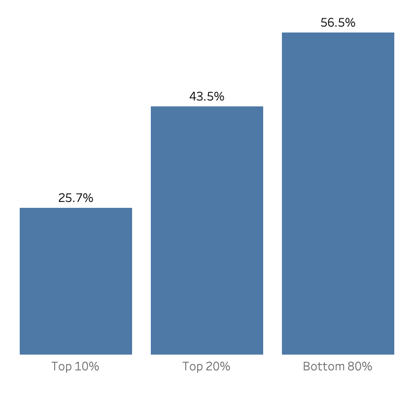
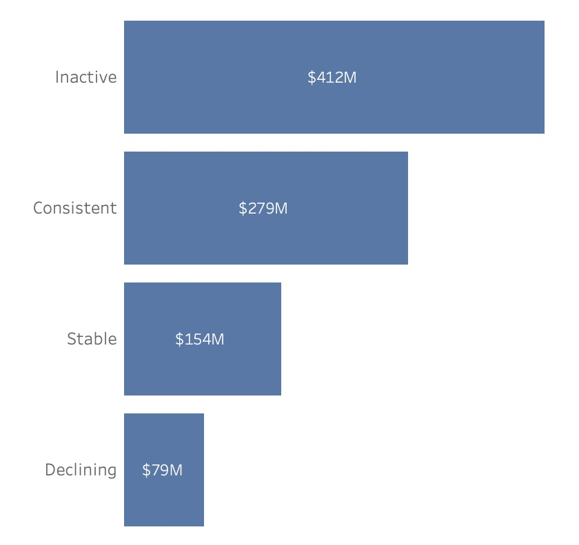
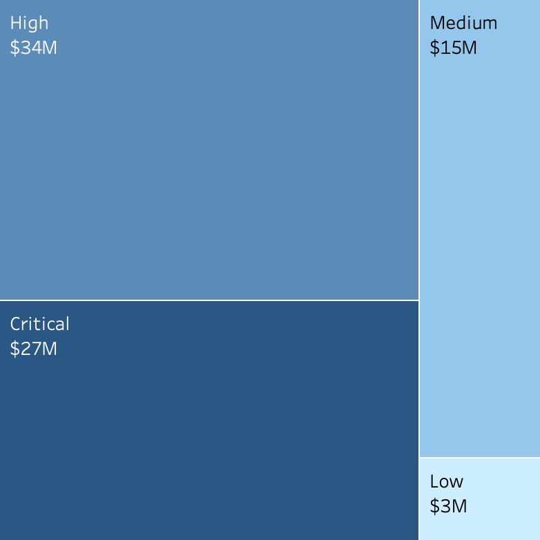

Contoso is a large-scale retail company operating across multiple countries and product categories. Revenue grew from $88M in 2015 to a peak of $444M in 2022, followed by a noticeable decline—raising concerns around revenue stability, customer retention, and long-term sustainability. Leadership suspects that revenue may be heavily dependent on a relatively small group of high-value customers, creating potential exposure if these customers reduce engagement or churn.
The Challenge: Assess revenue dependency on high-value customers, detect early risk signals of disengagement, and quantify how much revenue is exposed to potential churn.
Nearly half of Contoso’s revenue, 43.5%, comes from just 20% of customers, creating significant concentration risk. Within this segment, nearly half of customers are already inactive, while 1,421 Declining customers represent $78.7M in revenue and $44.2M in profit — still within retention reach. The online channel alone holds $27.1M—the single largest at-risk exposure. An additional 18 physical stores carry a combined $34M in revenue risk, requiring coordinated localized retention action. Without intervention, retention becomes acquisition — and that cost is never linear.
The top 20% of customers contribute 43.5% of total revenue and 44.26% of total profit—concentrated in just one-fifth of the customer base. Within that group, the top 10% alone account for over a quarter of both.
Business Implication: This is dependency, not just concentration. Losing high-value customers would impact revenue immediately and disproportionately. Retention of this segment is not a marketing priority—it’s a financial risk decision.

Only 26% of customers show consistent engagement, while 49% are classified as Inactive — high spenders averaging $3,904 AOV who have not purchased in ~462 days. The Declining segment (1,421 customers) shows the sharpest recency gap at ~558 days, despite historically adequate purchase frequency.
Business Implication: The majority of high-value customers are either disengaging or already lost. The Consistent segment is being outnumbered—without intervention, today’s Stable customers will become tomorrow’s Declining ones.

Among the top 20% of customers, the Declining segment (1,421 customers) contributes $78.7M (8.5% of top-customer revenue) — and they are still reachable. In contrast, Inactive customers represent $411M (44.6%) in historical revenue, indicating a substantial portion has already been lost.
Business Implication: The $78M at risk represents the last actionable retention window. These customers are still within reach—without intervention, they will transition into fully lost revenue, where recovery becomes acquisition at a significantly higher cost.
At the store level, revenue risk is highly concentrated. The Critical store — Online channel — holds $27.1M at risk across 1,420 declining customers, representing 34% of total at-risk revenue. The 18 High-risk physical stores collectively expose an additional $34M—larger in total but distributed across locations, making the online channel the most urgent intervention point.
Business Implication: The online channel needs immediate digital retention (personalization, reactivation, incentives), while physical stores require coordinated, localized retention efforts. Treating both the same would be ineffective.

ROW_NUMBER() was used to rank customers by revenue and profit for Top 10% and
Top 20% concentration analysis.
high_value_customers (top 20% by revenue) and at_risk_customers (Declining customer segment).
PERCENTILE_CONT() was used to analyze distributions and create
data-driven customer and store risk thresholds instead of arbitrary cutoffs.
Date
table (Dec 31, 2024).
| Metric | Value | Business Context |
|---|---|---|
| Top 20% Revenue Contribution | 43.5% | Nearly half of total revenue comes from top customers |
| Top 20% Profit Contribution | 44.26% | Profitability is equally concentrated |
| Revenue at Risk | $78.7M | Revenue tied to declining high-value customers |
| Profit at Risk | $44.2M | Profit exposure if declining customers churn |
| Largest Risk Channel (Online) | $27.1M | Highest concentration of at-risk revenue |
Tools: PostgreSQL • DBeaver • Tableau
Architecture: Raw → Clean → Gold → Analysis
Data Flow:
Raw Tables ↓ Clean Layer (type casting, validation, standardization) ↓ Gold Layer (customer_summarymaterialized view) ↓ Analysis Layer (high_value_customers,at_risk_customers)
Why This Architecture: This layered structure separates raw data from business-ready models, improves query performance, and ensures consistent metrics across all downstream analysis.
Detailed technical documentation here.
Download dataset
contoso/ ├── docs │ ├── charts │ ├── results │ └── contoso_ERD.svg ├── sql │ ├── 01_ddl │ ├── 02_test │ ├── 03_analytics │ └── db_init.sql ├── License.txt ├── README.md ├── contoso_viz.twb └── data_catalog.md
This project is licensed under the MIT License. See the License file for details.